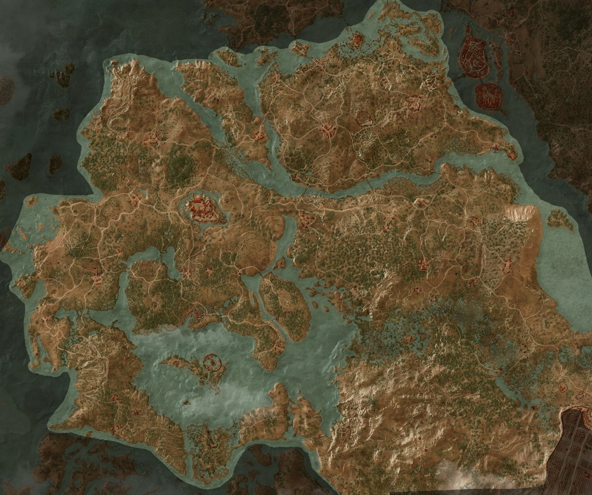

Krvavý Baron - Geralt musí pro Krvavého barona najít jeho zmizlou manželku a dceru, aby výměnou získal informace o Ciri. Během pátrání odhaluje temné rodinné tajemství, rituálně řeší prokletí nenarozeného dítěte a zjišťuje, že stopa vede k čarodějnicím v bažinách.
Dámy lesa -Geralt pátrá v bažinách po Ciri a narazí na tři zlé čarodějnice zvané Dámy lesa, které výměnou za informace požadují zničení tajemného ducha ve starém stromě. Splnění tohoto úkolu však tragicky zpečetí osud vesničanů i rodiny Krvavého Barona.
Putování ve tmě -Geralt se spojí s čarodějkou Keirou Metz, aby v rozsáhlých elfích ruinách společně našli tajemného mága, který dříve pomáhal Ciri. Cestou musí překonat nebezpečné pasti, iluze a porazit mocného bojovníka Divokého honu jménem Nithral.